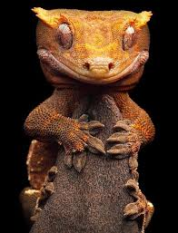
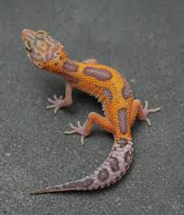
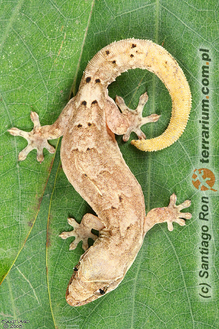
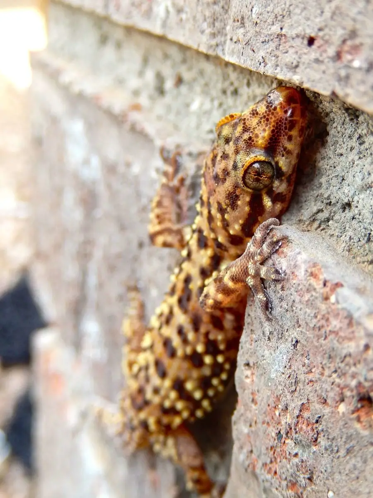
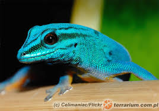
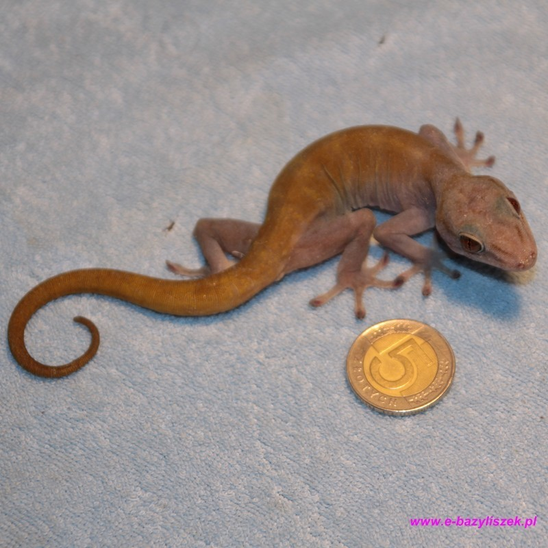
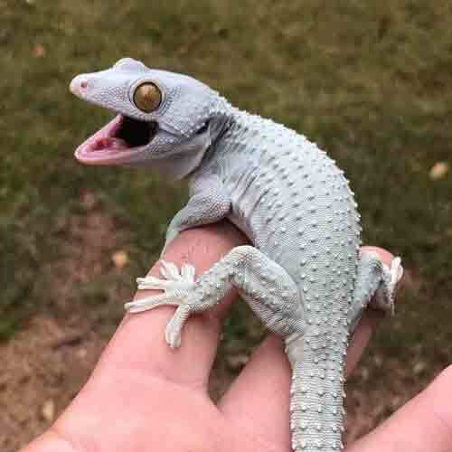

7 NAJCIEKAWSZYCH GEKONÓW
Gekon Orzęsiony
Pochodzi z Nowej Kaledonii. Charakterystyczne "rzęsy" nad oczami sprawiają, że wygląda uroczo.
Gekon Lamparci
Popularny gad hodowlany. Ma ruchome powieki, co jest nietypowe u gekonów.
Gekon Płaczący
Samice mogą rozmnażać się bez samców. Pochodzi z rejonu Pacyfiku.

Gekon Turecki
Świetnie przystosowany do życia na murach i w suchym środowisku.

Gekon Williamsa
Mały, żywo kolorowy gekon z Madagaskaru, często hodowany w grupach.

Gekon Złocisty
Jego zielone ciało pokryte jest żółtymi plamkami, przypominającymi złoty pył.

Gekon Toke
Jeden z największych gekonów. Słynie z głośnych odgłosów i silnego uścisku.